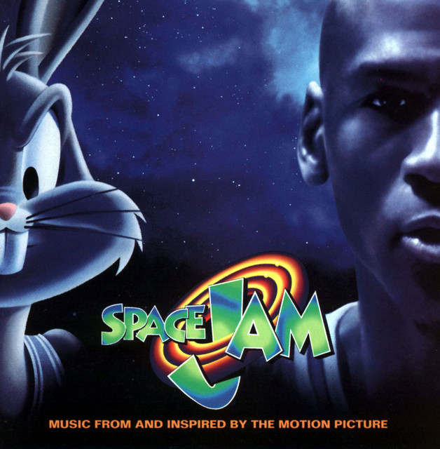

Nike faced a unique challenge following the unprecedented success of the original Air Jordan; how to follow it up. The popularity of the shoe's namesake,
Michael Jordan, already had begun outgrowing his home country, and Nike went to Italy to produce the Air Jordan II.
While this nod to internationally renowned Italian style was the first - and to date, only - Air Jordan produced in that country, it wasn't the only first for the
franchise. Bruce Kilgore, who also had designed the Air Force One, made the AJ II the first to not feature Nike's familiar Swoosh logo. "Nike" appeared across
the top of the heel counter, and the Wings logo of the original Air Jordan was on the tongue.
The AJ II shared a silhouette with the Nike Air Python that released in 1987, including a faux lizard skin upper and swooping lines that resembled those of a
sports car (which would factor prominently into the Jordan line in years to come). Known among sneaker collectors as the first "luxury" basketball shoe, the
AJ II paved the way for the heat that would accompany the Air Jordan III.
In the testing phase for the AJ II, Jordan wore a prototype that featured the upper of the original Air Jordan fused with the cushioning of the AJ II. The new
edition included a full-length Air-Sole unit meant to add extra cushioning for Jordan's sore feet. He only got to wear the AJ II for 18 games due to a broken
foot.

If the basketball world was still getting to know Michael Jordan, the ad campaign surrounding the Air Jordan III introduced one prominent playground baller
who knew MJ, and MJ's increasingly prominent shoes, all too well.
Released in 1988, the rollout of the AJ III included TV spots featuring actor/director Spike Lee as Mars Blackmon, from his 1986 film "She's Gotta Have It"
sparking a series of catch phrases heard 'round the sneaker world.
Architect-turned-designer Tinker Hatfield took the lead on this, the first of more than two dozen Air Jordans he would go on to design. Hatfield sparked some
style trends on the AJ III that have continued well into the 21st century. Most notably, he introduced elephant print overlays on the upper that have resurfaced
periodically - in reissues of the AJ III as well as other Jordan models - ever since.
Prior to the AJ III, basketball shoes were mostly just basketball shoes. Hatfield knew Jordan was into luxury and rolled that into the designs for Jordan's
signature shoes. While the Air Jordan II featured luxurious elements reflected in its Italian construction, Hatfield took this concept to a new level, even
involving Jordan in the search for the right leathers to use on the shoe.
Another first on the Air Jordan III; it was the first Jordan signature sneaker to feature the now-famous Jumpman logo. The now-ubiquitous image is a
silhouette of Jordan dunking on a 1985 Nike poster.
Finally, the shoe was the first Air Jordan to feature a visible Air-Sole unit under the heel. It retained Nike's "Air" embroidery on the heel, encapsulated Air in the
forefoot, and a polyurethane midsole for cushioning.
Jordan averaged 35 points per game while wearing the AJ III to a fourth straight All-Star Game. There, among the game's elite, MJ earned MVP and a second
straight Slam Dunk title, this time by flying in from the free-throw line.
The AJ III was first retro'd in 1994.
Following the success of the Air Jordan III, designer Tinker Hatfield delivered one of the more comfortable Air Jordans in the series, the Air Jordan IV.
The Jumpman logo made its second appearance on the tongue but with the word "Flight" added below it.
Carrying over from the AJ III were the sculpted midsole and the visible Air unit and padded tongue and collar.
The sneaker world was introduced to nubuck with the upper of the Air Jordan IV. The AJ IV featured mesh for the first time, increasing breathability. Multiple
areas of the AJ IV featured plastic. A lean triangular plastic piece attached to the nubuck heel was connected to a hard plastic lace holder. The lace holder
the forefoot added lockdown.
A plastic heel tab that read "Nike Air" was similar to that of the AJ III. Also on the upper, a plastic grid pattern that lay over the breathable mesh and behind
the triangular piece.
Mars Blackmon returned to the ad campaign marketing the shoe, continuing a relationship that has continued - to varying degrees - well into the 21st century.
Ten years after its original release, Nike retro'd the AJ IV in 1999; it sold out immediately.
Wearing the AJ IV, MJ was voted to his fifth consecutive All-Star game and won the league scoring title for the third consecutive year. One of the most
memorable AJ IV moments was when Michael hit the series-clinching, hanging jumper over Cleveland's Craig Ehlo in the first round of the playoffs - better
known as "The Shot"
@kelvin_basketball_edit The Goat 🐐 #michaeljordan #edit #basketball #viral #nba #basketballedits #fyp #foryou #foryoupage ♬ Love You So - The King Khan & BBQ Show